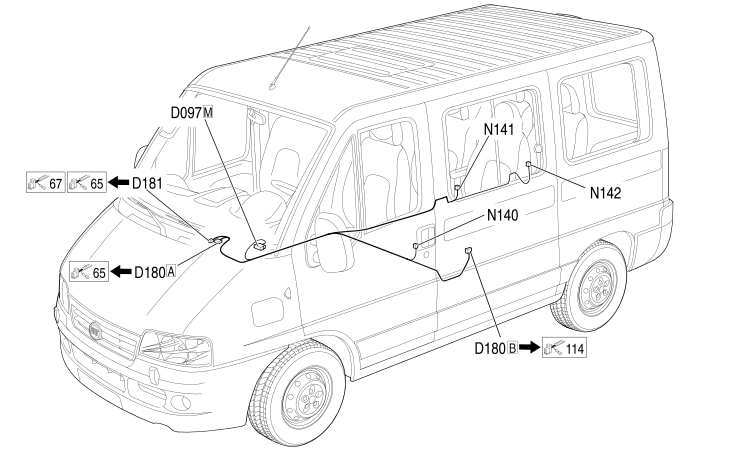

113 ADDITIONAL AIR CONDITIONER BRIDGE
- Path
- Electrical equipment > 2 WIRING > 113 ADDITIONAL AIR CONDITIONER BRIDGE
- Kind
- wiring harness
- Applies to
- all engines; all production periods; only with equipment: Van and Chassis cab and Cruise Control
- Interactive page
- https://sloeber94.github.io/elrnDB-fDct/en/#/244002313
Applies to: all engines; all production periods; only with equipment: Van and Chassis cab and Cruise Control

Topics that link to this page (7)
- D097M SHORT CIRCUITING COUPLING (ADDITIONAL AIR CONDITIONER BRIDGE)
- D180A AIR CONDITIONING/ADDITIONAL AIR CONDITIONING COUPLING (ADDITIONAL AIR CONDITIONER BRIDGE)
- D180B AIR CONDITIONING/ADDITIONAL AIR CONDITIONING COUPLING (ADDITIONAL AIR CONDITIONER BRIDGE)
- D181 HEATER/ADDITIONAL HEATER COUPLING (ADDITIONAL AIR CONDITIONER BRIDGE)
- N140 FRONT SUPPLEMENTARY HEATER (ADDITIONAL AIR CONDITIONER BRIDGE)
- N141 SECOND ROW SUPPLEMENTARY HEATER (ADDITIONAL AIR CONDITIONER BRIDGE)
- N142 THIRD ROW SUPPLEMENTARY HEATER (ADDITIONAL AIR CONDITIONER BRIDGE)